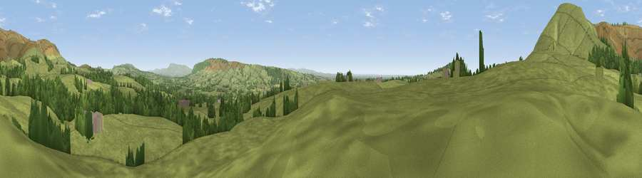

Viewpoint near Chipping
#22358 in England · top 65% of its area beats it · near ChippingWhere it is
The exact computed spot (SD 60725 43825). Click the marker for map links.
The view, rendered

A 360° render of this exact spot computed from the terrain model, tree cover and land cover — summer colours, afternoon light, calibrated against photographs of famous viewpoints. Real trees, hedges and buildings will differ in detail.
The panorama
Grey silhouette: terrain skyline in each direction (720 bearings, Earth curvature and refraction included). Dashed green: skyline with trees (+15 m) and buildings (+8 m) as obstacles. Blue strip: how far the ground is visible on each bearing.
Where the view opens
Wedge length = distance to the farthest visible ground on that bearing (vegetation-aware). Rings at 10, 25 and 50 km.
What fills the view
87% grassland · 11% woodland · 1% built-up
Angular shares of the visible panorama (visual magnitude), not map area. Landscape diversity 0.20 (0–1 Shannon).
Key numbers
More beautiful places nearby
The staircase of upgrades: each row has a higher view potential than everything closer. Driving times are estimates from straight-line distance, calibrated against real road routing — check an actual route before setting out.
| Place | Direction | Drive | Score |
|---|---|---|---|
| Parlick | NW · 2 km | ~4 min | 77.5 |
| Viewpoint near Scorton | WNW · 10 km | ~19 min | 79.9 |
| Darwen Hill | SSE · 23 km | ~38 min | 80.7 |
| Rivington Pike | S · 30 km | ~47 min | 81.9 |
| Warton Crag | NNW · 31 km | ~48 min | 83.2 |
| Viewpoint near Grange-over-Sands | NNW · 40 km | ~60 min | 83.4 |
| Viewpoint near Cartmel | NW · 43 km | ~63 min | 87.0 |
| Viewpoint near Cartmel | NW · 44 km | ~64 min | 87.2 |
53.88911, -2.59905 · source: screening · position refined by local search. Computed location — check access rights before visiting.